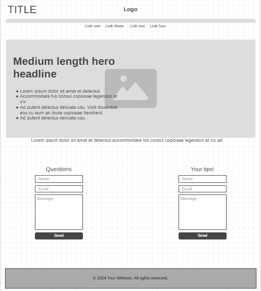
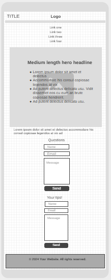

Site Plan of Fernanda Souza
Site Name: Love Your Plant, but how?
This name was chosen because the page is aimed at people who love plants and are interested in learning how to
care for them.
Site Purpose:
"Love Your Plant, but how?" is a web page designed to help people who are interested in plants and have
questions about
how to take care of them. I share the advantages that is to have in our enviroment
plants.
I also want it to be a space where people can ask questions and share suggestions, so I can offer the best
support possible.
Scenarios:
- How often should I water my plants?
- How to identify if a plant is indoor or outdoor?
- Does it help if I talk to my plants?
Color Schema:
- Background-color: #e7ffe7
- Font color: #2A4D14 I will use it for paragraphs and the h1 y h2
- Accent color 1: #317B22 I will use it for details for example for the backgrounds in forms, and links
clicked
- Accent color 2: #67E0A3 I will use it for details for example hover in links of the nav sections and
background color in buttons
Typography:
Font-family: "Outfit", sans-serif; SemiBold 600 for h1 and h2
Font-family: "Inter", sans-serif; weight 300 for the whole body and h3
Wireframe:
Large view:

Mobile view:
